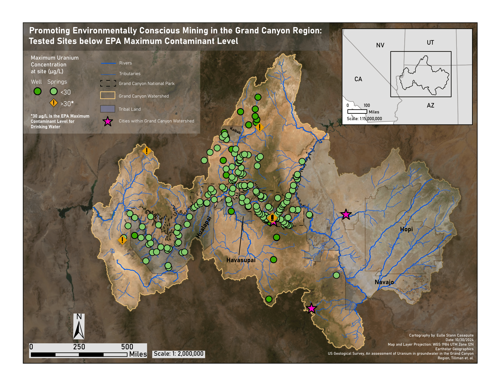
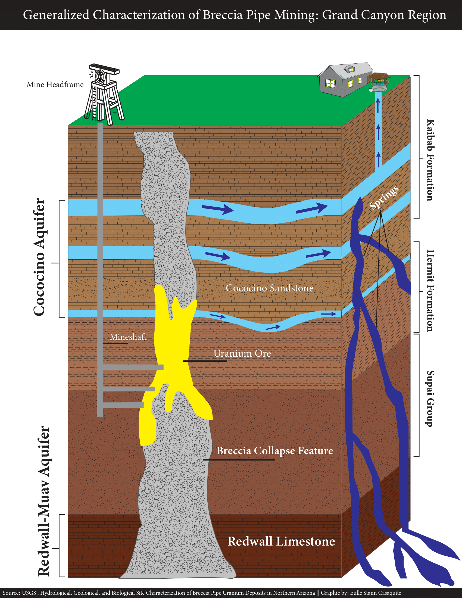
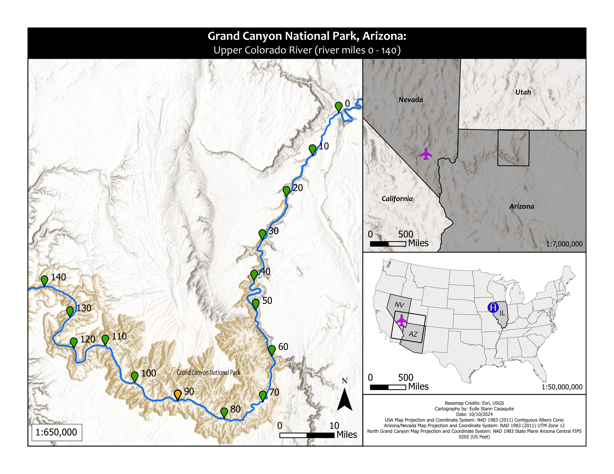

Oct 2024
Uranium Mining in the Grand Canyon Region

Dec 2024
Vintage North America

Dec 2024
Southeast Asia

Dec 2024
Cities of Metro Manila

Dec 2024
Philippines General Reference

Nov 2024
Subsurface Map

Oct 2024
Grand Canyon General Reference

Oct 2024
Bright Angel Trail

Dec 2024
Philippine Trench Bathymetry

Jan 2025
Iowa Land Cover Map

Jan 2025
Mississippi River Watershed

Mar 2025
Orinoco River Watershed

Mar 2025
Roundels Around The World

Mar 2025
Whiteside County Elevation Map